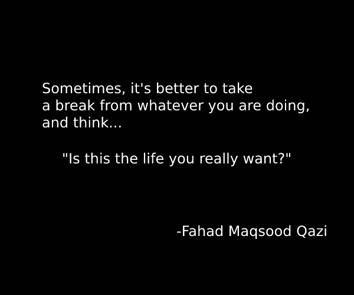
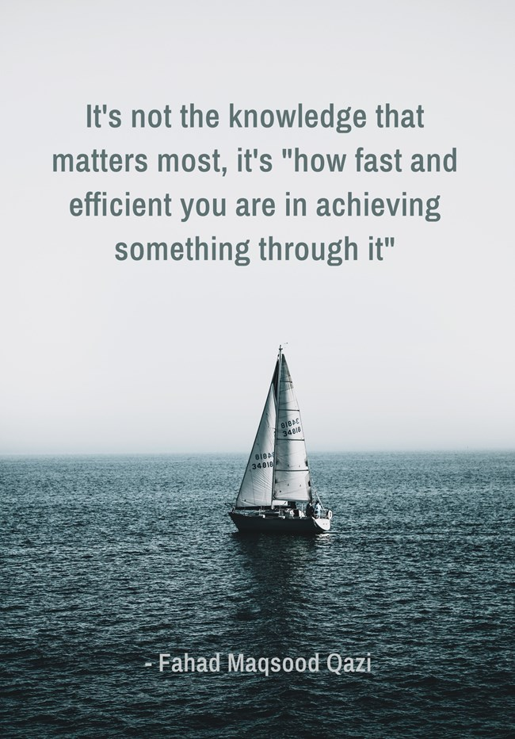

There is no better place to find an innovative idea than the mind of an introvert. ~ Fahad Maqsood Qazi

Sometimes, it's better to take a break from whatever you are doing, and think... "Is this the life you really want?" ~ Fahad Maqsood Qazi

It's not the knowledge that matters most, it's how fast and efficient you are in achieving something through it ~ Fahad Maqsood Qazi
